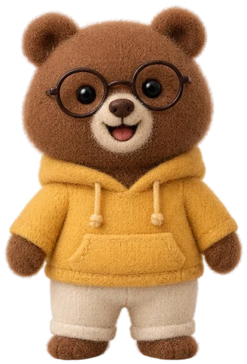
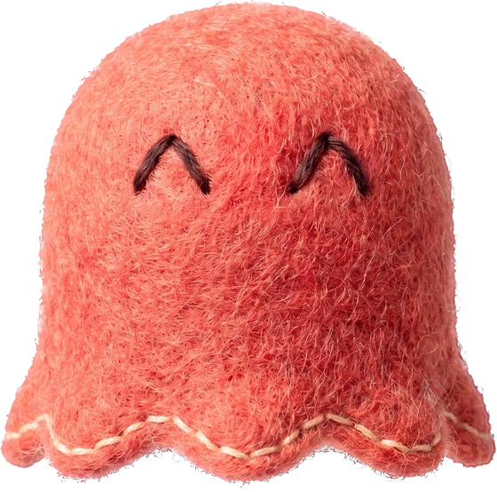

주문 8개
듣기 게임이에요. 소리를 켜야 손님 주문이 들리고 학습 기록에도 남아요.
코인을 불러오고 있어요.공통 차고 →
손님 주문을 듣고,
딱 맞는 음료를 만들어요!
따뜻하게? 얼음 없이? 두 잔? 끝까지 듣고 컵에 담아 서빙해요. 다르게 만들면 손님이 무엇이 다른지 알려 줘요.
듣기 게임이에요. 소리를 켜야 손님 주문이 들리고 학습 기록에도 남아요.
코인을 불러오고 있어요.공통 차고 →
얼음 없이 차갑게 하려면 ‘차갑게’, 넣은 재료를 다시 누르면 빠져요. 키보드로도 해요: 1~6 재료 · Q 컵 하나 더 · ⌫ 컵 빼기 · R 다시 듣기 · Space 서빙 · Esc 멈춤.

손님이 주문하는 중
빈 컵

하는 모습에 맞춰 손님 속도와 주문 종류만 바꿨어요. 점수나 실력 판정이 아니에요. 다음 영업은 여기서 이어서 시작해요.
첫 제출 정확도는 답한 주문 중 첫 서빙이 맞았던 비율이에요. 글로 확인한 주문도 포함돼요. 서빙 점수는 고쳐서 완료한 주문에도 쌓이며, 미응답은 따로 세요.
한국어 주문 음성은 합성 음성이에요. 학습 효과는 학생 검증 전이며, 학습 기록은 이 브라우저에 저장돼요. 학생 계정과 다른 기기에는 아직 연결되지 않아요.